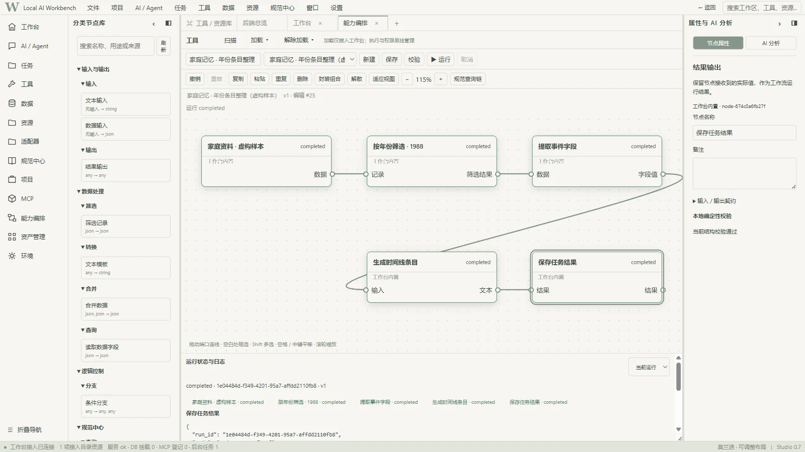
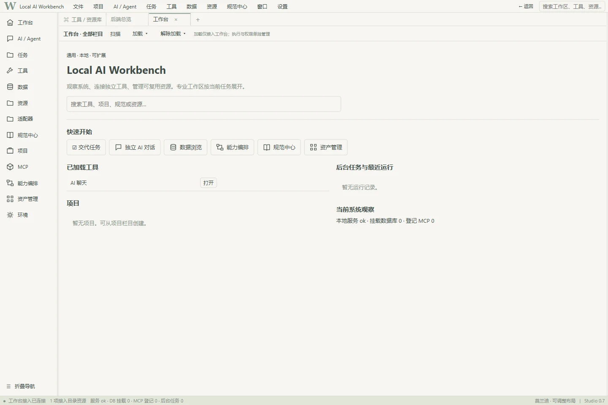

FEATURED PRODUCT / LOCAL AI SYSTEMS
Local AI
Workbench.
让 AI 按规矩运行，
让能力自由组合。Let AI work within rules.
Let capabilities connect.
从对话走向任务。一个组织工具、资源与执行规则的本地 AI 工作环境。From conversation to tasks. A local AI environment for organizing tools, resources and execution rules.


01 / PRODUCT FILM
一分钟，
走进工作台。One minute.
Inside the workbench.
影片暂未上线。先通过真实界面和下方交互示意了解工作台；视频就绪后将在这里播放。The film is not online yet. Explore the real interface and interactive guide below; the video will play here when available.
真实界面封面 · 按需播放 · 不自动加载影片Real-interface cover · On-demand playback · No automatic video download
02 / INTERACTIVE ARCHITECTURE
把一个目标，
拆成可理解的步骤。One goal.
Understand every step.
示例目标：把家庭资料整理为时间线。点击、悬停或用键盘选择节点，查看输入、输出与能力边界。Example goal: turn family records into a timeline. Click, hover or use the keyboard to explore each node’s inputs, outputs and boundaries.
已遵循减少动效偏好；请使用上一步、下一步或直接选择节点。Reduced-motion preference respected. Use Previous, Next or select a node directly.
文件读取Read files
从获准访问的资料开始，保留每份文件的来源标识。Start with authorized materials and retain a source identifier for each file.
- 示意输入Illustrative input
- 虚构样本：三份家庭资料摘录Fictional sample: three family-record excerpts
- 示意输出Illustrative output
- 带来源的文本片段Text fragments with source references
note-1988.txt →「1988 年搬入新家」note-1988.txt → “Moved into a new home in 1988”
仅解释数据入口；本页面不读取你的文件。Explains the input boundary only. This page does not read your files.
全部样本为虚构数据；高亮和连线仅表达说明顺序，不代表任务成功。All sample data is fictional. Highlights and links explain the sequence, not task success.
03 / UNDER THE SURFACE
自由组合，
不意味着没有边界。Flexible composition.
Explicit boundaries.
前端负责呈现与交互，后端负责能力接入、校验与执行。以下模块来自当前代码；状态说明与源码可以一并检查。The frontend presents and coordinates interaction; the backend integrates, validates and executes capabilities. These modules are grounded in current code, with scope notes and source links.
01模型接入Model access需配置与授权Configuration & permission
通过 AI 总控连接已登记模型；远程服务会接收获准发送的请求。Connect registered models through AI control. Remote providers receive authorized requests.
检查实现Inspect implementation ↗02工具与资产Tools & assets已有管理框架Management framework exists
扫描、加载和卸载能力；适配器目录保留真实来源、版本及契约引用。Scan, load and unload capabilities. The adapter catalog preserves real sources, versions and contracts.
检查实现Inspect implementation ↗03能力编排Capability composition内置流程已有实测Built-in flow demonstrated
节点、端口和参数构成工作流；本地校验与可选 AI 分析分离。Nodes, ports and parameters form workflows. Local validation is separate from optional AI analysis.
检查实现Inspect implementation ↗04任务执行Task execution依赖执行与取消接口Dependency execution & cancellation
按依赖传递数据，记录节点状态、输入输出与错误；支持取消请求。Pass data by dependency and record node state, inputs, outputs and errors; support cancellation requests.
检查实现Inspect implementation ↗05规范与权限Governance & permissions受管理入口约束Managed-entry constraints
管理入口检查规范与授权。加载能力不授予新的执行权限，也不保证所有旧工具都已覆盖。Managed entry points check rules and authorization. Loading grants no new execution rights and does not imply coverage of every legacy tool.
检查实现Inspect implementation ↗06数据与追溯Data & traceability版本与运行记录Versions & run records
持久化工作流与运行记录，用版本、来源哈希及运行标识连接结果和过程。Persist workflows and runs; connect outputs to their process using versions, source hashes and run IDs.
检查实现Inspect implementation ↗FROM ILLUSTRATION TO EVIDENCE
示意解释理念。
实录说明边界。The guide explains the idea.
The capture shows the scope.
展示的五节点流程使用虚构家庭资料，依次完成数据输入、年份筛选、字段提取、文本模板和结果输出。画面来自实际运行，不代表通用 PDF 或 OCR 处理已经实现。The five-node example uses fictional family records: data input, year filtering, field extraction, a text template and result output. This is an actual run, not evidence of general PDF or OCR support.
右侧为空工作台的实际默认界面。新下载的源码不会预装演示资料或专业插件。The capture shows the actual default empty workbench. A fresh source checkout does not preload demo records or specialized plugins.


04 / GET STARTED
从源码开始，
建立你的工作环境。Start with the source.
Build your environment.
前后端配套使用。当前提供源码，尚无独立安装包；模型服务需要自行配置。Use the frontend with its companion backend. Source is available; there is no standalone installer. Configure your own model service.
在 GitHub 使用 Code → Download ZIP，或按 README 克隆。后端请选择 workbench-backend 分支，而非 main。Use Code → Download ZIP on GitHub, or clone as described in the README. Choose the workbench-backend branch for the backend, not main.